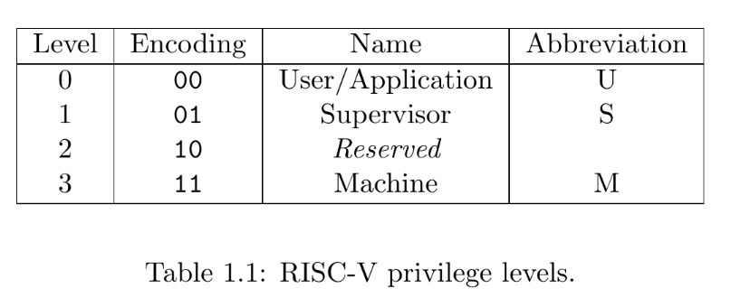
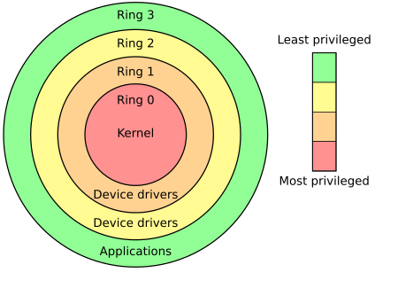
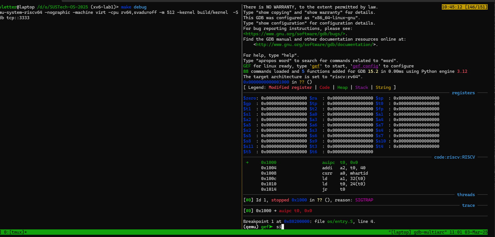
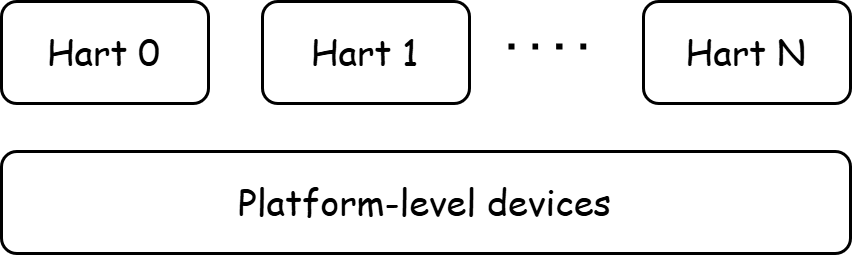
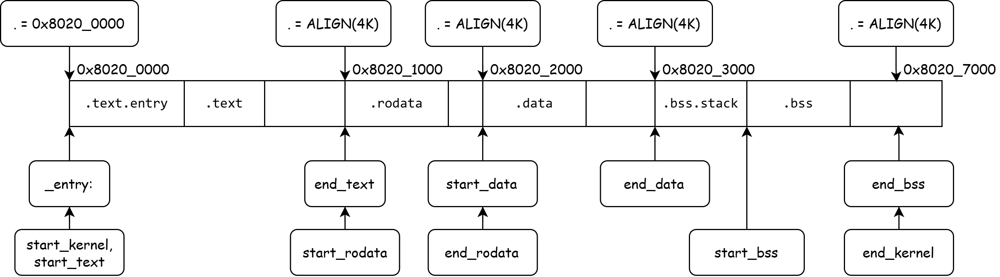

裸机程序 - Bare Metal¶
当我们在为 Linux 环境编程时，由于Linux环境已经提供了libc函数和对应的封装好的系统调用，我们通常只需要考虑程序的逻辑就可以完成与操作系统的交互。例如当我们使用 printf 和 scanf 在标准输入输出流上进行操作时，用户态的运行环境是由 libc 提供的，而内核环境是由 Linux Kernel 提供的。
但是，当我们在写自己的操作系统时，我们并没有 Linux 或其他操作系统提供的运行环境，而是直接与 CPU 和硬件交互。这种直接与CPU和硬件直接进行交互的程序被称为裸机程序 ( bare-metal program )。
什么是裸机程序
A bare-metal program is a type of software that runs directly on the hardware of a device without relying on an underlying operating system (OS). Essentially, it's code that interacts with the hardware at the most fundamental level, controlling the processor, memory, input/output (I/O) devices, and other components directly.
在我们的 xv6 实验中，我们将在 RISC-V 体系架构上编写操作系统程序。
实验步骤 1 ：运行第一个裸机程序
xv6-lab1 代码分支
https://github.com/yuk1i/SUSTech-OS-2025/tree/xv6-lab1
使用命令 git clone https://github.com/yuk1i/SUSTech-OS-2025 -b xv6-lab1 xv6lab1 下载 xv6-lab1 代码。
建议每次实验的代码下载在不同位置。
在 git clone 上述代码仓库后，我们可以在本地运行 make 来编译 xv6 内核。在 make 编译内核成功后，我们可以使用 make run 调用 qemu 来运行我们的第一个 xv6 操作系统。
make run 会调用以下命令：qemu-system-riscv64 -nographic -machine virt -cpu rv64 -m 512 -kernel build/kernel，这表示：
- 使用
qemu-system-riscv64模拟一个 RISC-V 64位 CPU -nographic：禁用图形输出-machine virt：使用virt机器模型-cpu rv64：使用 riscv64 位 CPU-m 512：指定内存大小 512MiB-kernel build/kernel：指定加载的内核文件为 build/kernel
什么是QEMU?
QEMU是一款开源的虚拟机软件，它可以模拟多种不同的硬件平台，包括x86、ARM、MIPS、SPARC等，支持多种操作系统的运行，如Linux、Windows、Mac OS X、FreeBSD等。QEMU可用于虚拟化、仿真、调试和测试等多种应用场景。它支持全系统仿真和用户模式仿真，允许用户在一种架构上运行另一种架构的操作系统和程序。
在我们的操作系统课程中，其实是在现有操作系统中通过虚拟机软件安装了linux系统，再在虚拟机的linux系统中使用QEMU模拟一个RISCV64架构的虚拟机，最后在这台虚拟机上运行我们编写的操作系统。
运行效果如下：
$ make run
qemu-system-riscv64 -nographic -machine virt -cpu rv64 -m 512 -kernel build/kernel
OpenSBI v1.5
____ _____ ____ _____
/ __ \ / ____| _ \_ _|
| | | |_ __ ___ _ __ | (___ | |_) || |
| | | | '_ \ / _ \ '_ \ \___ \| _ < | |
| |__| | |_) | __/ | | |____) | |_) || |_
\____/| .__/ \___|_| |_|_____/|____/_____|
| |
|_|
Platform Name : riscv-virtio,qemu
Platform Features : medeleg
Platform HART Count : 1
Platform IPI Device : aclint-mswi
Platform Timer Device : aclint-mtimer @ 10000000Hz
Platform Console Device : uart8250
Platform HSM Device : ---
Platform PMU Device : ---
Platform Reboot Device : syscon-reboot
Platform Shutdown Device : syscon-poweroff
Platform Suspend Device : ---
Platform CPPC Device : ---
Firmware Base : 0x80000000
Firmware Size : 327 KB
Firmware RW Offset : 0x40000
Firmware RW Size : 71 KB
Firmware Heap Offset : 0x49000
Firmware Heap Size : 35 KB (total), 2 KB (reserved), 11 KB (used), 21 KB (free)
Firmware Scratch Size : 4096 B (total), 416 B (used), 3680 B (free)
Runtime SBI Version : 2.0
Domain0 Name : root
Domain0 Boot HART : 0
Domain0 HARTs : 0*
Domain0 Region00 : 0x0000000000100000-0x0000000000100fff M: (I,R,W) S/U: (R,W)
Domain0 Region01 : 0x0000000010000000-0x0000000010000fff M: (I,R,W) S/U: (R,W)
Domain0 Region02 : 0x0000000002000000-0x000000000200ffff M: (I,R,W) S/U: ()
Domain0 Region03 : 0x0000000080040000-0x000000008005ffff M: (R,W) S/U: ()
Domain0 Region04 : 0x0000000080000000-0x000000008003ffff M: (R,X) S/U: ()
Domain0 Region05 : 0x000000000c400000-0x000000000c5fffff M: (I,R,W) S/U: (R,W)
Domain0 Region06 : 0x000000000c000000-0x000000000c3fffff M: (I,R,W) S/U: (R,W)
Domain0 Region07 : 0x0000000000000000-0xffffffffffffffff M: () S/U: (R,W,X)
Domain0 Next Address : 0x0000000080200000
Domain0 Next Arg1 : 0x000000009fe00000
Domain0 Next Mode : S-mode
Domain0 SysReset : yes
Domain0 SysSuspend : yes
Boot HART ID : 0
Boot HART Domain : root
Boot HART Priv Version : v1.12
Boot HART Base ISA : rv64imafdch
Boot HART ISA Extensions : sstc,zicntr,zihpm,zicboz,zicbom,sdtrig
Boot HART PMP Count : 16
Boot HART PMP Granularity : 2 bits
Boot HART PMP Address Bits: 54
Boot HART MHPM Info : 16 (0x0007fff8)
Boot HART Debug Triggers : 2 triggers
Boot HART MIDELEG : 0x0000000000001666
Boot HART MEDELEG : 0x0000000000f0b509
clean bss: 0x0000000080207000 - 0x0000000080207000
Kernel booted.
Hello World!
sysregs:
sstatus : 0x8000000200006000
scause : 0x0000000000000000
sepc : 0x0000000000000000
stval : 0x0000000000000000
sip : 0x0000000000000000
sie : 0x0000000000000000
satp : 0x0000000000000000
0x00000000deadbeef
kernel ends, parking...
如何退出qemu
同时按下 Ctrl 和 A 按钮，然后松开，再点击 X 按钮。
如果你已经按过一些按钮导致上述方法不生效，可以直接关掉 Terminal。
实验步骤 1 结束
上述实验过程演示了一个最小化内核的启动过程。接下来，我们将从 特权级 的角度解释操作系统如何启动运行的。首先，了解一下什么是特权级。
特权级 (Privilege Level)¶
Privilege Levels (riscv-privileged.pdf)
特权级（Privilege Level）是计算机系统中用于定义不同进程或用户在系统中所拥有的访问控制和权限的概念。 特权级的存在是为了保护系统资源、确保安全性，并根据可信度和功能对进程进行隔离。
At any time, a RISC-V hardware thread (hart) is running at some privilege level encoded as a mode in one or more CSRs (control and status registers).
Three RISC-V privilege levels are currently defined as shown in Table 1.1.
Privilege levels are used to provide protection between different components of the software stack, and attempts to perform operations not permitted by the current privilege mode will cause an exception to be raised.
These exceptions will normally cause traps into an underlying execution environment.
特权级是 CPU 运行时的一个重要的状态，它表示了当前运行的代码具有有多高的特权。最高特权的代码允许无限制的访问所有资源，例如所有物理内存和所有外设；而高特权可以限制低特权的代码所能访问的内容。例如，低特权状态不允许访问高特权所拥有的内存和 CSR 寄存器；但是 CPU 运行在低特权级时，程序可以主动或被动地切换至高特权级并执行预定的代码。
为什么需要特权级
CPU设计中引入特权级（Privilege Levels）的主要目的是为了确保系统的安全性和稳定性，特别是在现代计算机系统中，操作系统需要对硬件资源进行严格的管理和控制。特权级的引入可以帮助操作系统保护内核（Kernel）和用户程序之间的隔离，防止不受信任的代码或应用程序对系统的关键部分进行不当操作。
例如，CPU 时间是一种重要的“硬件资源”。现代操作系统通过让多个用户程序轮流执行的方式，实现所有程序“看起来”在同时执行的假象。我们通过操作系统（高特权级）来实现对 CPU 时间的管理，即强制让应用程序在执行一段时间后暂停执行，并切换到下一个应用程序继续执行。
如果我们不使用特权级来强制实现这一点，而是期望应用程序主动地让出 CPU 时间，那么恶意的应用程序可以一直占用 CPU 时间而不释放，导致系统上所有应用程序均无响应。
特权级的区分是 在 CPU 硬件电路上实现 的，而不是通过软件模拟的。在 RISC-V 上，特权级使用 2bit 进行区分，分为 M mode，S mode，和 U mode。

The machine level has the highest privileges and is the only mandatory privilege level for a RISC-V hardware platform. Code run in machine-mode (M-mode) is usually inherently trusted, as it has low-level access to the machine implementation. M-mode can be used to manage secure execution environments on RISC-V. User-mode (U-mode) and supervisor-mode (S-mode) are intended for conventional application and operating system usage respectively.
- M mode 为 RISC-V 架构中的最高特权，一般运行 OpenSBI 固件程序，拥有对物理内存的直接访问权限；
- S mode 是为操作系统设计的特选等级，可以设置虚拟内存；
- U mode 是为用户程序设计的特权等级，拥有最小的特权，也适用于虚拟内存。
在裸机程序中，我们需要完成对 CPU 状态的初始化，包括了页表、中断等基本功能。 这些 CPU 的状态是通过 CSR (Control and Status Registers) 控制的，这些寄存器一般只允许高特权级的用户进行访问和修改。
AArch64 & x86¶
现代的指令集架构均有设置不同的特权级。
移动设备上最常使用的 arm64 (AArch64) CPU 架构定义了四种特权级(Exception Levels)，从低到高： EL0、EL1、EL2和EL3。 与 RISC-V 架构类似，最高特权级 EL3 运行最底层的固件(Secure Monitor)，EL1 特权级运行操作系统(OS)，EL0 特权级运行用户程序，而EL2特权级运行虚拟机程序(Hypervisor)。
而 x86 (IA32 & AMD64) 架构定义特权级为四个 Ring ：Ring 0 代表最高特权级，运行操作系统；而 Ring 3 代表最低特权级，运行用户程序。通常来说，x86架构上只会使用到 Ring 0 和 Ring 3 两种特权级。
 →
CSR¶
不同于32个通用寄存器 (General Purpose Registers)，CSR 是一些特殊的寄存器。(如果你不知道寄存器是什么，你需要学习下计组相关知识)
CSR（Control and Status Registers，控制与状态寄存器）是用于控制 CPU 行为、存储系统状态、管理异常和中断的重要寄存器集。CSR 寄存器需要用特殊的指令来访问。
每个 CSR 均有特权级限制。例如，time 和 cycle 寄存器可以被 U mode 读取但不能修改。sstatus 等 S mode CSR 可以被 S/M mode 读写。mstatus 等 M mode CSR 只能被 M mode 读写。在低特权级访问高特权级的 CSR 会触发程序异常。
每个 CSR 中会定义一些字段（Field），它们占据一些比特，表示一些特殊的含义。我们会在后续的课程中更多的接触 CSR。
运行环境¶
在 RISC-V 的三个特权级上，RISC-V 架构定义了三种运行状态：分别是 固件 (Machine mode) 、 操作系统 (Supervisor mode) 和 用户态 (User mode) 。
在 RISC-V 架构中，操作系统 (Supervisor) 向应用程序 (Application) 提供的运行环境被称为 ABI (Application Binary Interface)，而固件 (Machine, SEE) 为操作系统 (Supervisor, OS) 提供的运行环境则被称为 Supervisor Binary Interface (SBI)。

固件 (OpenSBI) 提供了对一些 基本硬件的访问接口 ，并通过类似 syscall 的方式为 S Mode 提供服务，它们被称为 SBI Call。其中就包含了基本的串口输入输出函数，sbi_console_putchar 和 sbi_console_getchar。
启动流程概述¶
操作系统的启动流程即是对每一级运行环境的初始化。通常，我们会从高特权级开始初始化，并一级一级地降级到低特权级上继续进行初始化。
从 CPU 上电复位的那一刻起，便开始执行第一条指令。此时，CPU 运行的代码通常来自芯片内部或外部的一块小型 ROM 区域，我们称之为 Bootloader。Bootloader 可以被视为启动的第 0 阶段，它的主要任务是找到下一阶段的镜像、复制到内存中、并跳转。
在 RISC-V 平台上，下一阶段是 SBI（Supervisor Binary Interface） 的初始化，我们将使用 OpenSBI 实现这个初始化过程。因此，在第0阶段，OpenSBI 镜像和我们的内核镜像会被加载到内存中。Bootloader 负责将 CPU 跳转到 OpenSBI 的加载地址，并启动其代码执行。此时，我们进入了下一阶段。
在这一阶段中， OpenSBI 会对重要的系统设备进行初始化。当 OpenSBI 完成 M 模式（M mode） 的初始化后，它会将 CPU 权限降级至 S 模式（S mode），并进入内核的入口点，正式开始执行内核代码。
下面我们将具体解释每一阶段的工作：
第0阶段：从 CPU 上电开始¶
在 CPU 上电后，它会进行硬件级别的复位，可以回想一下我们在数字逻辑课程中如何对 reg 变量在 rst_n 时进行复位。
复位会将 PC 设置到一个固定值，它被称为 Reset Vector（复位向量），这是 CPU 上电后执行的第一个代码的地址。 Reset Vector 指向的地址空间一般是由 RISC-V 片上的 Block ROM 提供的，这一片代码区域是不可写入的。在 Reset Vector 执行完毕后，它会将控制流跳转到下一阶段. 在 QEMU 中，下一阶段即是 M mode 的 OpenSBI。
什么是实现定义行为
每个 RISC-V 硬件的 Reset Vector 值是由它实现所设置的，而 RISC-V 手册并没有规定 RISC-V 硬件的 Reset Vector 该是多少，我们将这种值称为 Implementation-Defined 。
实验步骤 2 ：GDB调试，观察启动过程
GDB 调试
GDB（GNU Debugger）是一个功能强大的开源调试工具，主要用于调试用C、C++等编程语言编写的程序。它可以帮助开发者查找和修复程序中的错误，支持多种调试功能，如设置断点、单步执行、查看变量值、检查内存状态等。
通过GDB调试工具，我们可以在QEMU运行操作系统时打断点，观察操作系统的运行过程。
首先，将 set auto-load safe-path / 这一行加入到 ~/.gdbinit 下面，以允许 gdb 自动加载当前目录下的.gdbinit 文件。
在一个终端中执行 make debug，它会启动 qemu-system-riscv64，但是会加上参数 -S -gdb tcp::3333，这表示它会等待调试器附加。
接着，在另一个终端（确保它的 PWD 和上一个终端一致）运行 gdb-multiarch，它会启动 GDB 调试器并自动加载当前目录下面的 .gdbinit 文件。
如果一切正常，gdb 会停留在地址 0x1000 上，这即是 QEMU 平台的 Reset Vector 地址。

使用 x/10i $pc 指令可以打印当前 PC 指针所指向的 10 条指令。
Lab 实验报告 1
请你找出 QEMU 的 Bootloader 执行完毕后将跳转的下一阶段的指令地址。
使用 si 可以执行下一条指令，当你执行到 jr t0 时，使用 print $t0 打印 t0 寄存器的值。
然后，将t0寄存器的值写在实验报告中。
Lab 实验报告 2
请你找出 QEMU 在启动时往内存中加载了哪些内容。
参照 实验报告 1，打开一个 GDB 终端，执行命令 monitor info roms，将输出信息填入报告纸上面的表格中。
每条输出信息中，addr 表示加载的起始地址，size 表示加载的内容长度，mem=rom/ram 表示这一段内容是不可修改的 ROM 还是可修改的内存 RAM。
实验步骤 2 结束
下一阶段：OpenSBI¶
在计算机中，固件(firmware)是一种特定的计算机软件，它为设备的特定硬件提供低级控制，也可以进一步加载其他软件。固件可以为设备更复杂的软件（如操作系统）提供标准化的操作环境。 对于不太复杂的设备，固件可以直接充当设备的完整操作系统，执行所有控制、监视和数据操作功能。 在基于 x86 的计算机系统中, BIOS 或 UEFI 是固件；在基于 riscv 的计算机系统中，OpenSBI 是固件。OpenSBI运行在M态（M-mode），因为固件需要直接访问硬件。
在这个阶段，OpenSBI 会对重要的系统设备进行初始化，我们将其称为 Platform-level 的设备。它们是整个系统共享的，即多个 CPU （也被称为 Hart）所看到的设备是同一个。

Platform Name : riscv-virtio,qemu
Platform Features : medeleg
Platform HART Count : 1
Platform IPI Device : aclint-mswi
Platform Timer Device : aclint-mtimer @ 10000000Hz
Platform Console Device : uart8250
Platform HSM Device : ---
Platform PMU Device : ---
Platform Reboot Device : syscon-reboot
Platform Shutdown Device : syscon-poweroff
Platform Suspend Device : ---
随后，OpenSBI 指定下一阶段的启动是我们的内核：
Domain0 Next Address : 0x0000000080200000
Domain0 Next Arg1 : 0x000000009fe00000
Domain0 Next Mode : S-mode
并初始化 Hart 相关的配置：
Boot HART ID : 0
Boot HART Domain : root
Boot HART Priv Version : v1.12
Boot HART Base ISA : rv64imafdch
下下阶段：Kernel 启动¶
在 OpenSBI 初始化完成后，OpenSBI 会降级到 S-mode 并将 PC 指针指向我们的内核起始地址 0x80200000。该地址上保存着内核的第一个入口 _entry 的代码，这也是我们操作系统的第一条指令，至此，CPU 控制权来到我们的 xv6 内核。
_entry 的代码在 entry.S 文件中。但是， 这个代码是如何放到内核起始地址 0x80200000 处的呢？
编译过程¶
首先观察内核代码的编译过程：
$ /d/o/SUSTech-OS-2025 (xv6-lab1)> make
riscv64-unknown-elf-gcc -fPIE -fno-pic -fno-plt -Wall -Wno-unused-variable -Werror -O -fno-omit-frame-pointer -ggdb -march=rv64g -MD -mcmodel=medany -ffreestanding -fno-common -nostdlib -mno-relax -Ios -std=gnu17 -fno-stack-protector -D LOG_LEVEL_ERROR -c os/console.c -o build/os/console.o
riscv64-unknown-elf-gcc -fPIE -fno-pic -fno-plt -Wall -Wno-unused-variable -Werror -O -fno-omit-frame-pointer -ggdb -march=rv64g -MD -mcmodel=medany -ffreestanding -fno-common -nostdlib -mno-relax -Ios -std=gnu17 -fno-stack-protector -D LOG_LEVEL_ERROR -c os/main.c -o build/os/main.o
riscv64-unknown-elf-gcc -fPIE -fno-pic -fno-plt -Wall -Wno-unused-variable -Werror -O -fno-omit-frame-pointer -ggdb -march=rv64g -MD -mcmodel=medany -ffreestanding -fno-common -nostdlib -mno-relax -Ios -std=gnu17 -fno-stack-protector -D LOG_LEVEL_ERROR -c os/printf.c -o build/os/printf.o
riscv64-unknown-elf-gcc -fPIE -fno-pic -fno-plt -Wall -Wno-unused-variable -Werror -O -fno-omit-frame-pointer -ggdb -march=rv64g -MD -mcmodel=medany -ffreestanding -fno-common -nostdlib -mno-relax -Ios -std=gnu17 -fno-stack-protector -D LOG_LEVEL_ERROR -c os/sbi.c -o build/os/sbi.o
riscv64-unknown-elf-gcc -fPIE -fno-pic -fno-plt -Wall -Wno-unused-variable -Werror -O -fno-omit-frame-pointer -ggdb -march=rv64g -MD -mcmodel=medany -ffreestanding -fno-common -nostdlib -mno-relax -Ios -std=gnu17 -fno-stack-protector -D LOG_LEVEL_ERROR -c os/string.c -o build/os/string.o
riscv64-unknown-elf-gcc -fPIE -fno-pic -fno-plt -Wall -Wno-unused-variable -Werror -O -fno-omit-frame-pointer -ggdb -march=rv64g -MD -mcmodel=medany -ffreestanding -fno-common -nostdlib -mno-relax -Ios -std=gnu17 -fno-stack-protector -D LOG_LEVEL_ERROR -c os/entry.S -o build/os/entry.o
riscv64-unknown-elf-ld -z max-page-size=4096 -T os/kernel.ld -o build/kernel build/os/console.o build/os/main.o build/os/printf.o build/os/sbi.o build/os/string.o build/os/entry.o
riscv64-unknown-elf-objdump -S build/kernel > build/kernel.asm
riscv64-unknown-elf-objdump -t build/kernel | sed '1,/SYMBOL TABLE/d; s/ .* / /; /^$/d' > build/kernel.sym
Build kernel done
尝试理解上述编译参数：
gcc 是我们常用的 C 语言编译器，而 riscv64-unknown-elf-gcc 则表示使用 RISC-V 64 位、面向未知平台、产出 ELF 格式的 gcc 套件。
其余的编译参数我们可以分开理解：
-
-march=rv64g -mcmodel=medany -mno-relax这表示我们的目标架构是 rv64g，寻址模型是
medany，并且链接器不要进行 Relax。See also: https://gcc.gnu.org/onlinedocs/gcc/RISC-V-Options.html
-
-ffreestanding -fno-common -nostdlib这表示我们不使用标准库函数，也不假设一些通用函数（如 memset）的定义与标准函数库定义一致。
-
-fno-pie -no-pie -fno-plt -fno-omit-frame-pointer -fno-stack-protector这表示生成的 ELF 文件不要使用位置无关代码 (Position-Independent Executable)，因为这会导致生成 got 和 plt 段，我们的内核还暂时无法处理如此复杂的结构。
-fno-omit-frame-pointer -fno-stack-protector表示保留 frame-pointer，禁用栈保护。 -
-Wall -Wno-unused-variable -Werror -ggdb这表示显示所有警告、但是不提示未使用的变量警告、并将所有 warning 当作 error。最后
-ggdb表示使用 gdb 调试。 -
-Ios -std=gnu17 -O2 -c os/entry.S -o build/os/entry.o表示使用 os 目录作为 include 目录，使用 gnu17 C标准，启用 O2 优化。
编译 (
-c) 原文件os/entry.S，输出到build/os/entry.o中。
ld 表示链接器，我们使用 ld 将所有编译器产生的 .o 文件链接为最终的 kernel ELF 文件。
riscv64-unknown-elf-ld -z max-page-size=4096 -T os/kernel.ld -o build/kernel build/os/console.o build/os/main.o build/os/printf.o build/os/sbi.o build/os/string.o build/os/entry.o
这一串命令表示：
- 使用 os/kernel.ld 作为链接脚本
- 输出为
build/kernel - 输入为所有 .o 文件
Linker Script¶
kernel.ld 是链接脚本，链接脚本将告知链接器应该如何排列所有 .o 文件中的段（Section），即内存布局 (Memory Layout)，并指明产生的 ELF 文件应该如何加载到内存中 (Program Header)。
内存布局
内存布局（Memory Layout）是指程序在运行时，其数据和代码在内存中的组织方式和存储结构。
通过阅读 kernel.ld 我们可以获得xv6的内存布局：
OUTPUT_ARCH(riscv)
ENTRY(_entry)
BASE_ADDRESS = 0x80200000;
SECTIONS
{
. = BASE_ADDRESS;
skernel = .;
s_text = .;
.text : {
*(.text.entry)
*(.text .text.*)
. = ALIGN(4K);
e_text = .;
}
. = ALIGN(4K);
s_rodata = .;
.rodata : {
*(.rodata .rodata.*)
}
. = ALIGN(4K);
e_rodata = .;
s_data = .;
.data : {
*(.data.apps)
*(.data .data.*)
}
. = ALIGN(4K);
e_data = .;
.bss : {
*(.bss.stack)
s_bss = .;
*(.bss .bss.*)
}
. = ALIGN(4K);
e_bss = .;
ekernel = .;
/DISCARD/ : {
*(.eh_frame)
}
}
开头的 OUTPUT_ARCH 表示生成的 ELF 文件适用与 RISC-V 架构，ENTRY 表示 ELF 的入口点为符号 _entry。然后，我们定义一个常量为 BASE_ADDRESS 使它等于 0x80200000，这也是我们内核的起始地址。
在 SECTIONS 中，我们首先定义当前地址 (. 符号) (想象链接器正在从某个地址开始给所有 section 安排位置) 为 0x80200000，并导出 skernel 和 s_text 符号的值为当前地址。
随后，我们定义 (.text) 段，这通常表示代码段：
首先排列所有位于 .text.entry 的符号，随后排列所有位于 .text 的符号。
我们在 .text 段中首先包含了一个特殊的 Section .text.entry，这个 section 是在 entry.S 文件中定义的：
我们在 entry.S 文件中指定 _entry 符号应该被放置到 .text.entry 段，并在链接脚本中指定这个段为内核的开始地址。 这样我们即可确保 _entry 会被放置到内核起始地址。当我们启动内核时，我们会从这个起始地址开始执行，也就是执行了内核的第一条指令。
我们可以通过反汇编 build/kernel 来观察这一点：
$ llvm-objdump-19 -d build/kernel | less
build/kernel: file format elf64-littleriscv
Disassembly of section .text:
0000000080200000 <skernel>:
80200000: 00007117 auipc sp, 0x7
80200004: 00010113 mv sp, sp
80200008: 00000097 auipc ra, 0x0
8020000c: 174080e7 jalr 0x174(ra) <main>
然后，将当前地址对齐到 4K 边界，导出 e_text 符号。
剩余的 .rodata, .data 和 .bss 则表示数据段，但是略有不同：
.rodata表示只读的数据段.data表示可读可写的数据段.bss表示应该在程序启动时被清零的数据段
当然，所有数据段均是不可执行的。
我们可以用以下图片来表示 Kernel 镜像的内存布局结构。

最后，我们可以使用 readelf 工具观察最后产出的 kernel ELF 文件：
$ /d/o/SUSTech-OS-2025 (xv6-lab1)> llvm-readelf-19 -a build/kernel
ELF Header:
Magic: 7f 45 4c 46 02 01 01 00 00 00 00 00 00 00 00 00
Class: ELF64
Data: 2's complement, little endian
Version: 1 (current)
OS/ABI: UNIX - System V
ABI Version: 0
Type: EXEC (Executable file)
Machine: RISC-V
Version: 0x1
Entry point address: 0x80200000
Start of program headers: 64 (bytes into file)
Start of section headers: 29208 (bytes into file)
Flags: 0x4, double-float ABI
Size of this header: 64 (bytes)
Size of program headers: 56 (bytes)
Number of program headers: 4
Size of section headers: 64 (bytes)
Number of section headers: 19
Section header string table index: 18
There are 19 section headers, starting at offset 0x7218:
Section Headers:
[Nr] Name Type Address Off Size ES Flg Lk Inf Al
[ 0] NULL 0000000000000000 000000 000000 00 0 0 0
[ 1] .text PROGBITS 0000000080200000 001000 001000 00 AX 0 0 4
[ 2] .rodata PROGBITS 0000000080201000 002000 0001f0 00 A 0 0 8
[ 3] .data PROGBITS 0000000080202000 003000 000008 00 WA 0 0 8
[ 4] .bss NOBITS 0000000080203000 003008 004000 00 WA 0 0 1
[ 5] .debug_info PROGBITS 0000000000000000 003008 0010c0 00 0 0 1
[ 6] .debug_abbrev PROGBITS 0000000000000000 0040c8 0006e5 00 0 0 1
[ 7] .debug_loclists PROGBITS 0000000000000000 0047ad 0004b5 00 0 0 1
[ 8] .debug_aranges PROGBITS 0000000000000000 004c70 000130 00 0 0 16
[ 9] .debug_line PROGBITS 0000000000000000 004da0 000fe7 00 0 0 1
[10] .debug_str PROGBITS 0000000000000000 005d87 0003bc 01 MS 0 0 1
[11] .debug_line_str PROGBITS 0000000000000000 006143 0000d3 01 MS 0 0 1
[12] .comment PROGBITS 0000000000000000 006216 00001a 01 MS 0 0 1
[13] .riscv.attributes RISCV_ATTRIBUTES 0000000000000000 006230 000065 00 0 0 1
[14] .debug_frame PROGBITS 0000000000000000 006298 0004c8 00 0 0 8
[15] .debug_rnglists PROGBITS 0000000000000000 006760 00007f 00 0 0 1
[16] .symtab SYMTAB 0000000000000000 0067e0 0006f0 18 17 31 8
[17] .strtab STRTAB 0000000000000000 006ed0 000279 00 0 0 1
[18] .shstrtab STRTAB 0000000000000000 007149 0000cc 00 0 0 1
Key to Flags:
W (write), A (alloc), X (execute), M (merge), S (strings), I (info),
L (link order), O (extra OS processing required), G (group), T (TLS),
C (compressed), x (unknown), o (OS specific), E (exclude),
R (retain), p (processor specific)
Elf file type is EXEC (Executable file)
Entry point 0x80200000
There are 4 program headers, starting at offset 64
Program Headers:
Type Offset VirtAddr PhysAddr FileSiz MemSiz Flg Align
ATTRIBUTES 0x006230 0x0000000000000000 0x0000000000000000 0x000065 0x000000 R 0x1
LOAD 0x001000 0x0000000080200000 0x0000000080200000 0x0011f0 0x0011f0 R E 0x1000
LOAD 0x003000 0x0000000080202000 0x0000000080202000 0x000008 0x005000 RW 0x1000
GNU_STACK 0x000000 0x0000000000000000 0x0000000000000000 0x000000 0x000000 RW 0x10
Section to Segment mapping:
Segment Sections...
00 .riscv.attributes
01 .text .rodata
02 .data .bss
03
None .debug_info .debug_abbrev .debug_loclists .debug_aranges .debug_line .debug_str .debug_line_str .comment .debug_frame .debug_rnglists .symtab .strtab .shstrtab
- 最终的文件类型为：
Type: EXEC (Executable file) - 入口地址为：
Entry point address: 0x80200000 - 一共有 19 个 Sections：
- Sections有自己的 Flags,其中 A 表示这一个 Section 在加载时应该被分配内存空间，W 表示可以写入，X 表示可以执行。
- 一共有 4 个 Program Headers，其中有两个 LOAD:
- 第一个 LOAD 表示：
- 在虚拟地址 (VirtAddr) 0x80200000 处，映射物理地址 (PhysAddr) 0x80200000，分配 0x0011d0 字节的内存空间 (MemSiz)，该内存段的权限为 RE (Read & Executable)。
- 从该 ELF 文件的 (Offset) 0x001000 处复制 0x0011d0 字节 (FileSiz) 到上述内存空间。
- 第二个 LOAD 表示：
- 在虚拟地址 0x80202000 处，映射物理地址 0x80202000，分配 0x005000 的内存空间，该内存段权限为 RW (Read & Write)。
- 从该 ELF 文件的 0x3000 处，复制 0x0008 字节到该内存段。但是，该内存段分配了 0x5000 的空间， 这表示剩下未被填充的空间全都是零，这即是 bss 段 。
- 第一个 LOAD 表示：
- 在
Section to Segment mapping:处我们可以看到：- 第一个 Program Headers 包含 .text, .rodata 三个 Sections。
- 第二个 Program Headers 包含 .data 和 .bss 段。
接下来，我们继续运行内核。
观察内核运行的首几行代码：
80200000: 00007117 auipc sp, 0x7
80200004: 00010113 mv sp, sp
80200008: 00000097 auipc ra, 0x0
8020000c: 174080e7 jalr 0x174(ra) <main>
源代码（entry.S）：
.section .text.entry
.globl _entry
_entry:
lla sp, boot_stack_top
call main
.section .bss.stack
.globl boot_stack
boot_stack:
.space 4096 * 4
.globl boot_stack_top
boot_stack_top:
在这段代码中：
- 我们使用
auipc和addi指令，将栈指针指向boot_stack_top，这是我们提前为第一个内核入口开辟的栈。 - 我们通过
auipc和jalr指令，跳转到 main 函数继续执行。
为什么需要使用汇编作为内核入口
因为在内核入口处，OpenSBI 没有为我们设置 sp 栈指针，而 C 语言的运行环境要求有栈作为保存栈上变量和函数调用保存寄存器的地点，所以我们首先需要使用汇编初始化 sp 寄存器。
运行完上述汇编代码后，内核跳转到 main 函数：
观察 main.c 中的 main 函数：
void main() {
printf("\n");
printf("clean bss: %p - %p\n", s_bss, e_bss);
memset(s_bss, 0, e_bss - s_bss);
printf("Kernel booted.\n");
printf("Hello World!\n");
printf("sysregs:\n");
print_sysregs();
printf("%d\n", global_variable);
printf("kernel ends, parking...\n");
while (1);
}
- 首先清空 .bss 段（在 Linux 操作系统上，这一步是 Linux Kernel 实现的，但是现在我们就是 Kernel，所以这件事情得自己干）
- 然后用 printf 打印一些信息，随后开始死循环。
Lab 实验报告 3
尝试读取 CSR mvendorid。
在 main.c 中，在 while(1); 死循环前加入以下代码：
make run 编译并运行，你的程序能正常读取到 CSR mvendorid 的值吗？
阅读 RISC-V Privilege 手册 (riscv-privilege.pdf) 章节 2.1 CSR Address Mapping Conventions 以及 2.2 CSR Listing，猜测为什么你的程序会无限重启。
SBI Call¶
在这个 lab 的内核中，printf 会调用 consputc 来向控制台打印一个字符，而这个函数最终会调用 sbi_call(SBI_CONSOLE_PUTCHAR, c, 0, 0)。
在我们的操作系统中，如果需要访问硬件提供的功能（包括对串口输入输出的访问函数sbi_console_putchar 和 sbi_console_getchar），我们首先需要设置 a0、a1 等寄存器，然后通过 ecall 指令向 M Mode 的程序，即 OpenSBI，发起请求。OpenSBI 在完成请求后会返回。
内联汇编
ecall (environment call)，当我们在 S 态执行这条指令时，会触发一个 ecall-from-s-mode-exception，从而进入 M 模式中的中断处理流程（如设置定时器等）；当我们在 U 态执行这条指令时，会触发一个 ecall-from-u-mode-exception，从而进入 S 模式中的中断处理流程（常用来进行系统调用）。
注意，C语言并不能直接调用 ecall , 需要通过内联汇编来实现。
Calling Convention
Calling Convention 表示在进行函数调用时，调用者 (Caller) 和 被调用者 (Callee) 所遵循的规范。
这通常包含了：
- 参数与返回值是如何传递
- Caller 和 Callee 需要保存哪些寄存器
SBI 的 Calling Convention 定义如下 (riscv-sbi.pdf)：
All SBI functions share a single binary encoding, which facilitates the mixing of SBI extensions. The SBI specification follows the below calling convention.
- An ECALL is used as the control transfer instruction between the supervisor and the SEE.
- a7 encodes the SBI extension ID (EID),
- a6 encodes the SBI function ID (FID) for a given extension ID encoded in a7 for any SBI extension defined in or after SBI v0.2.
- All registers except a0 & a1 must be preserved across an SBI call by the callee.
- SBI functions must return a pair of values in a0 and a1, with a0 returning an error code.
而我们要使用的 putchar 和 getchar 是来自 Legacy Extensions：
- Nothing is returned in a1 register.
- All registers except a0 must be preserved across an SBI call by the callee.
- The value returned in a0 register is SBI legacy extension specific.
按照 RISC-V 的 Calling Convention，参数是通过 a 系列寄存器传递，从 a0 开始。
在 sbi_call_legacy 函数中，我们首先声明了4个变量，并且注明他们应该直接被分配到相应的寄存器上 (register, asm("a0"))。
随后，我们将 a7 赋值为我们要调用哪个 SBI 函数，三个参数分别赋值给 a0, a1 和 a2。
然后，我们使用 asm volatile 进行 ecall 调用。
最后，返回 a0 寄存器的值。
const uint64 SBI_CONSOLE_PUTCHAR = 1;
const uint64 SBI_CONSOLE_GETCHAR = 2;
static int inline sbi_call_legacy(uint64 which, uint64 arg0, uint64 arg1, uint64 arg2)
{
register uint64 a0 asm("a0") = arg0;
register uint64 a1 asm("a1") = arg1;
register uint64 a2 asm("a2") = arg2;
register uint64 a7 asm("a7") = which;
asm volatile("ecall" : "=r"(a0) : "r"(a0), "r"(a1), "r"(a2), "r"(a7) : "memory");
return a0;
}
void console_putchar(int c) {
sbi_call_legacy(SBI_CONSOLE_PUTCHAR, c, 0, 0);
}
asm volatile 表示在 C 代码中直接插入汇编代码（内联汇编），它分为四部分：
我们使用 volatile 作为 asm-qualifiers 表示禁止编译器对这一段代码进行可能的优化。
AssemblerTemplate 表示汇编的模板，OutputOperands 表示哪些 C 变量应该被是为这一段汇编的输出，InputOperands 表示哪些 C 变量应该被视为这一段汇编的输入，Clobbers 表示哪一些寄存器或系统状态会被这一段汇编代码修改。
See also: https://gcc.gnu.org/onlinedocs/gcc-12.1.0/gcc/Extended-Asm.html